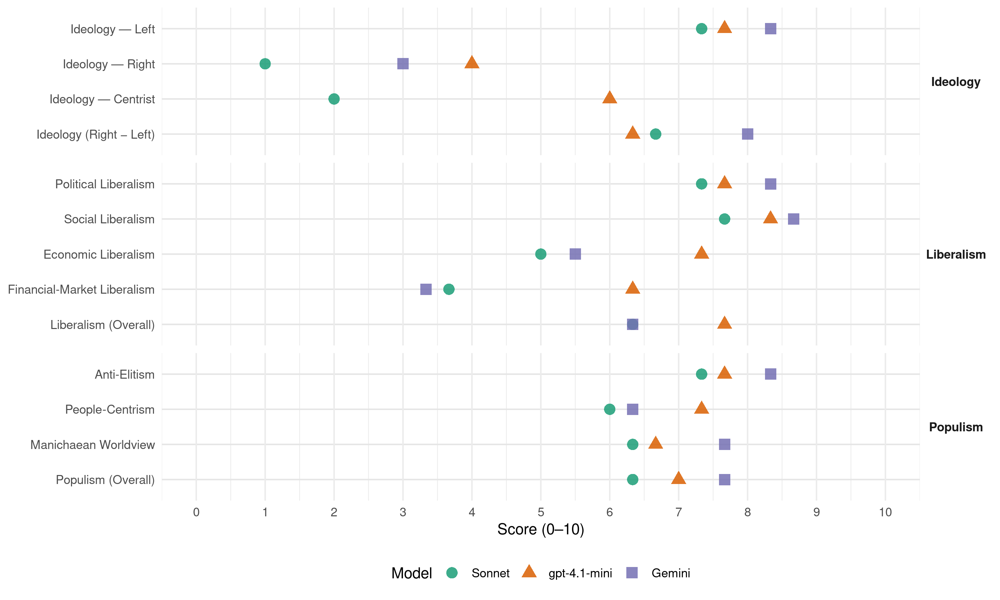

PM (Hungary, 2018)
manifesto_id 86111_201804
Get full text: This site shows derived annotations and short verbatim quotes only. The full manifesto text is © Manifesto Project / WZB — obtain it via manifesto-project.wzb.eu using the manifesto_id above.
Headline scores
| Dimension | Sonnet | gpt-4.1-mini | Gemini |
|---|---|---|---|
| Populism (Overall) | 6.3 | 7.0 | 7.7 |
| Anti-Elitism | 7.3 | 7.7 | 8.3 |
| People-Centrism | 6.0 | 7.3 | 6.3 |
| Manichaean Worldview | 6.3 | 6.7 | 7.7 |
| Ideology (Right − Left) | 6.7 | 6.3 | 8.0 |
| Liberalism (Overall) | 6.3 | 7.7 | 6.3 |
| Political Liberalism | 7.3 | 7.7 | 8.3 |
| Social Liberalism | 7.7 | 8.3 | 8.7 |
| Economic Liberalism | 5.0 | 7.3 | 5.5 |
| Financial-Market Liberalism | 3.7 | 6.3 | 3.3 |
Evidence per dimension
Economic Liberalism
Gemini · score 4.0 · mixed · chunk 1
“jogbiztonságot és igazságos versenyt teremtünk”
megerősítjük a szakszervezeteket. Kifehérítjük a gazdaságot, jogbiztonságot és igazságos versenyt teremtünk. Átállunk a magas hozzáadott értékre
Gemini · score 7.0 · verified · chunk 2
“engedélyezési eljárások helyett előnyben részesítjük a bejelentési”
egy számlára történő befizetését, és az engedélyezési eljárások helyett előnyben részesítjük a bejelentési kötelezettséget a vállalkozások
Gemini · score 4.0 · verified · chunk 3
“kis- és középvállalkozóknak”
vágó fiataloknak, valamint a kis- és középvállalkozóknak. Egy környezeti és energiareform úgy teremtene
gpt-4.1-mini · score 8.0 · verified · chunk 1
“Átállunk a magas hozzáadott értékre alapuló gazdasági modellre, támogatjuk az innovációt”
…Több munkahely, több pihenés, jövőbarát gazdaság. Átállunk a magas hozzáadott értékre alapuló gazdasági modellre, támogatjuk az innovációt…
gpt-4.1-mini · score 7.0 · verified · chunk 2
“normatív, automatikus vissza nem térítendő támogatásokra”
A korrupció melegágyaként ismert egyedi lobbizások helyett átállunk a normatív, automatikus vissza nem térítendő támogatásokra, amelyek hitelfelvétel esetén fedezetként is használhatók.
gpt-4.1-mini · score 7.0 · verified · chunk 3
“az uniós támogatásokat a pályázatlovagok helyett az állampolgárok kapják utalványként”
Az emberbe kell befektetni: az uniós támogatásokat a pályázatlovagok helyett az állampolgárok kapják utalványként! Titkos alkuk helyett közvetlenül választott képviselők és vezetők szabjanak irányt az EU-nak!
Sonnet · score 4.0 · verified · chunk 1
“jogbiztonságot és igazságos versenyt teremtünk”
Kifehérítjük a gazdaságot, jogbiztonságot és igazságos versenyt teremtünk.
Sonnet · score 6.0 · verified · chunk 2
“bejelentési kötelezettséget a vállalkozások számára”
az engedélyezési eljárások helyett előnyben részesítjük a bejelentési kötelezettséget a vállalkozások számára
Sonnet · score 5.0 · mixed · chunk 3
“a szennyezőkkel: a társadalmi és ökológiai költségek”
A környezethasználat, illetve a nagy környezeti kockázatú tevékenységek árát meg kell fizettetni a szennyezőkkel: a társadalmi és ökológiai költségek érvényesítése igazságosabbá teszi az erőforrások felhasználását
Financial-Market Liberalism
Gemini · score 3.0 · verified · chunk 1
“spekulatív tőkemozgásait kell bevonni a közteherviselés alá”
biztosító banki tranzakciók helyett a nagy pénzügyi intézmények spekulatív tőkemozgásait kell bevonni a közteherviselés alá, ezért elkötelezettek vagyunk az európai
Gemini · score 4.0 · verified · chunk 2
“hitelkárosultak visszamenőlegesen kárpótlást kapnának a tartozás”
Hitelkárosultak A devizahitelek károsultjai… javaslata szerint a hitelkárosultak visszamenőlegesen kárpótlást kapnának a tartozás és a törlesztőrészletek
Gemini · score 3.0 · verified · chunk 3
“pénzügyi tranzakciók és a környezetterhelés”
forrás biztosításában a magas jövedelmek, a tőke, a vagyon, a pénzügyi tranzakciók és a környezetterhelés- környezethasználat adóztatásának
gpt-4.1-mini · score 7.0 · verified · chunk 1
“Lezárjuk a transzferárazás és más, az „agresszív adóoptimalizáció” eszköztárába tartozó trükközések lehetőségét”
…Felülvizsgáljuk és eltöröljük az értelmetlen, de a költségvetést százmilliárdoktól megfosztó adókedvezményeket… Lezárjuk a transzferárazás és más, az „agresszív adóoptimalizáció” eszköztárába tartozó trükközések lehetőségét…
gpt-4.1-mini · score 6.0 · verified · chunk 2
“bankadó és az MNB-nek a hitelek forintosításon keletkezett”
Ennek pénzügyi fedezetét a bankadó és az MNB-nek a hitelek forintosításon keletkezett, majd közpénz jellegét – ideiglenesen – elvesztő, 200 milliárdos árfolyamnyeresége adja.
gpt-4.1-mini · score 6.0 · verified · chunk 3
“Fel kell számolni az adóparadicsomokat! Elodázhatatlan, hogy uniós együttműködéssel leszereljük az Európai Unió területén működő cégek adóelkerülési stratégiáit”
Közös adópolitikát! Olyan Európai Uniót szeretnénk, amelyben a tagországoknak eladósodás nélkül is van elég forrásuk arra, hogy a szociális védelem és a közszolgáltatások magas szintjét tartsák fenn. Fel kell számolni az adóparadicsomokat! Elodázhatatlan, hogy uniós együttműködéssel leszereljük az Európai Unió területén működő cégek adóelkerülési stratégiáit El kell érni, hogy a vállalkozások ott fizessenek adót, ahol a valódi gazdasági tevékenységük folyik, profitjuk keletkezik.
Sonnet · score 3.0 · verified · chunk 1
“spekulatív tőkemozgásait kell bevonni a közteherviselés alá”
az állampolgárok létszükségleteit biztosító banki tranzakciók helyett a nagy pénzügyi intézmények spekulatív tőkemozgásait kell bevonni a közteherviselés alá
Sonnet · score 4.0 · verified · chunk 2
“bankadó és az MNB-nek a hitelek forintosításon”
Ennek pénzügyi fedezetét a bankadó és az MNB-nek a hitelek forintosításon keletkezett, majd közpénz jellegét – ideiglenesen – elvesztő, 200 milliárdos árfolyamnyeresége adja
Sonnet · score 4.0 · verified · chunk 3
“a pénzügyi tranzakciók és a környezetterhelés”
a magas jövedelmek, a tőke, a vagyon, a pénzügyi tranzakciók és a környezetterhelés-környezethasználat adóztatásának a jelenleginél sokkal nagyobb szerepet kell játszania
Political Liberalism
Gemini · score 8.0 · verified · chunk 1
“részvételi demokráciát, digitális állampolgárságot”
9) Mindenki szava számít: részvételi demokráciát, digitális állampolgárságot! Megteremtjük a valódi hozzáférést a
Gemini · score 9.0 · verified · chunk 2
“vissza kell állítani az Alkotmánybíróság függetlenségét”
fékek és ellensúlyok rendszerét, ennek érdekében vissza kell állítani az Alkotmánybíróság függetlenségét, valamint a korábban
Gemini · score 8.0 · verified · chunk 3
“közvetlenül választott képviselők és vezetők”
helyett az állampolgárok kapják utalványként! Titkos alkuk helyett közvetlenül választott képviselők és vezetők szabjanak irányt az EU-nak!
gpt-4.1-mini · score 8.0 · verified · chunk 1
“Új Alkotmányt adunk és új Alkotmánybíróságot választunk”
…Mindenki szava számít: részvételi demokráciát, digitális állampolgárságot! Megteremtjük a valódi hozzáférést a demokráciához és az állami szolgáltatásokhoz. Új Alkotmányt adunk és új Alkotmánybíróságot választunk…
gpt-4.1-mini · score 8.0 · verified · chunk 2
“Új Alkotmányt adunk és új Alkotmánybíróságot választunk”
Mindenki szava számít – részvételi demokráciát, digitális állampolgárságot! Megteremtjük a valódi hozzáférést a demokráciához és az állami szolgáltatásokhoz. Új Alkotmányt adunk és új Alkotmánybíróságot választunk A választójogot 16 éves korra szállítjuk le, elvárássá tesszük a választási részvételt.
gpt-4.1-mini · score 7.0 · verified · chunk 3
“Átláthatóvá kell tenni a döntéshozási folyamatokat és a lobbitevékenységeket”
Demokratikus Uniót! Az uniós szintű politikai döntéshozatalt, a mindenkit érintő szabályozók megalkotását ki kell szabadítani a gazdasági elit érdekeinek fogságából. Átláthatóvá kell tenni a döntéshozási folyamatokat és a lobbitevékenységeket.
Sonnet · score 7.0 · verified · chunk 1
“Új Alkotmányt adunk és új Alkotmánybíróságot”
Megteremtjük a valódi hozzáférést a demokráciához és az állami szolgáltatásokhoz. Új Alkotmányt adunk és új Alkotmánybíróságot választunk.
Sonnet · score 8.0 · verified · chunk 2
“visszaállítani az Alkotmánybíróság függetlenségét”
vissza kell állítani az Alkotmánybíróság függetlenségét, valamint a korábban elvett jogokkal újra fel kell ruházni a testületet
Sonnet · score 7.0 · verified · chunk 3
“közvetlenül választott képviselők és vezetők”
Titkos alkuk helyett közvetlenül választott képviselők és vezetők szabjanak irányt az EU-nak! Demokratikus Uniót!
Liberalism (Overall)
Gemini · score 6.0 · verified · chunk 1
“jogbiztonságot és igazságos versenyt teremtünk”
megerősítjük a szakszervezeteket. Kifehérítjük a gazdaságot, jogbiztonságot és igazságos versenyt teremtünk. Átállunk a magas hozzáadott értékre
Gemini · score 7.0 · verified · chunk 2
“vissza kell állítani az Alkotmánybíróság függetlenségét”
fékek és ellensúlyok rendszerét, ennek érdekében vissza kell állítani az Alkotmánybíróság függetlenségét, valamint a korábban
Gemini · score 6.0 · verified · chunk 3
“közvetlenül választott képviselők és vezetők”
helyett az állampolgárok kapják utalványként! Titkos alkuk helyett közvetlenül választott képviselők és vezetők szabjanak irányt az EU-nak!
gpt-4.1-mini · score 8.0 · verified · chunk 1
“Új Alkotmányt adunk és új Alkotmánybíróságot választunk”
…Mindenki szava számít: részvételi demokráciát, digitális állampolgárságot! Megteremtjük a valódi hozzáférést a demokráciához és az állami szolgáltatásokhoz. Új Alkotmányt adunk és új Alkotmánybíróságot választunk…
gpt-4.1-mini · score 8.0 · verified · chunk 2
“Új Alkotmányt adunk és új Alkotmánybíróságot választunk”
Mindenki szava számít – részvételi demokráciát, digitális állampolgárságot! Megteremtjük a valódi hozzáférést a demokráciához és az állami szolgáltatásokhoz. Új Alkotmányt adunk és új Alkotmánybíróságot választunk A választójogot 16 éves korra szállítjuk le, elvárássá tesszük a választási részvételt.
gpt-4.1-mini · score 7.0 · verified · chunk 3
“Átláthatóvá kell tenni a döntéshozási folyamatokat és a lobbitevékenységeket”
Demokratikus Uniót! Az uniós szintű politikai döntéshozatalt, a mindenkit érintő szabályozók megalkotását ki kell szabadítani a gazdasági elit érdekeinek fogságából. Átláthatóvá kell tenni a döntéshozási folyamatokat és a lobbitevékenységeket.
Sonnet · score 6.0 · verified · chunk 1
“részvételi demokráciát, digitális állampolgárságot”
Mindenki szava számít: részvételi demokráciát, digitális állampolgárságot!
Sonnet · score 7.0 · verified · chunk 2
“visszaállítani az Alkotmánybíróság függetlenségét”
vissza kell állítani az Alkotmánybíróság függetlenségét, valamint a korábban elvett jogokkal újra fel kell ruházni a testületet
Sonnet · score 6.0 · verified · chunk 3
“közvetlenül választott képviselők és vezetők”
Titkos alkuk helyett közvetlenül választott képviselők és vezetők szabjanak irányt az EU-nak!
Anti-Elitism
Gemini · score 8.0 · verified · chunk 1
“megszűnt a bizalom a hatalmi elit felé”
határozza meg, ki hova születik. Érthető, hogy megszűnt a bizalom a hatalmi elit felé, amely hagyta, sőt, támogatta egy ilyen
Gemini · score 9.0 · verified · chunk 2
“Fidesz bűnözőállamában a kormányzás a lopásról szól”
Fidesz-károsultaknak Ma, a Fidesz bűnözőállamában a kormányzati működés a lopás köré szerveződik
Gemini · score 8.0 · verified · chunk 3
“kormányzat a gazdasági elit foglya”
országok többségében egyre többen vélik úgy, hogy a kormányzat a gazdasági elit foglya, s ezzel párhuzamosan növekszik a demokráciával
gpt-4.1-mini · score 9.0 · verified · chunk 1
“az emberek dühöt és irigységet is, hiszen azt látják”
…sokan éreznek dühöt és irigységet is, hiszen azt látják, hogy az elmúlt két és fél évtizedben néhány ezer ember kezében hatalmas vagyonok halmozódtak fel – sokszor érdemtelenül, vagy egyenesen törvénytelenül. És azt is látják, hogy mindegy, ki milyen keményen küzd, ha az életkilátásokat alapvetően az határozza meg, ki hova születik…
gpt-4.1-mini · score 8.0 · verified · chunk 2
“a kormányzás a lopásról szól”
A Fidesz bűnözőállamában a kormányzás a lopásról szól. A kormányváltás után: Visszavesszük a közpénzből lopott óriásvagyonokat Oligarcha-adót és progresszív földadót vezetünk be Felállítjuk a Korrupcióellenes Ügyészséget és a Közérdekvédelmi Központot; átláthatóvá tesszük a politikusok és családtagjaik vagyonát.
gpt-4.1-mini · score 6.0 · verified · chunk 3
“a kormányzat a gazdasági elit foglya”
Az Eurobarométer-adatok szerint az uniós országok többségében egyre többen vélik úgy, hogy a kormányzat a gazdasági elit foglya, s ezzel párhuzamosan növekszik a demokráciával szembeni általános elégedetlenség, különösen a periféria országaiban.
Sonnet · score 8.0 · verified · chunk 1
“hatalmi elit felé, amely hagyta”
Érthető, hogy megszűnt a bizalom a hatalmi elit felé, amely hagyta, sőt, támogatta egy ilyen igazságtalan
Sonnet · score 8.0 · verified · chunk 2
“Fidesz bűnözőállamában a kormányzás a lopásról szól”
Ma, a Fidesz bűnözőállamában a kormányzati működés a lopás köré szerveződik
Sonnet · score 6.0 · verified · chunk 3
“a gazdasági elit foglya”
egyre többen vélik úgy, hogy a kormányzat a gazdasági elit foglya, s ezzel párhuzamosan növekszik a demokráciával szembeni általános elégedetlenség
Ideology — Centrist
gpt-4.1-mini · score 6.0 · verified · chunk 1
“Mindenki szava számít: részvételi demokráciát, digitális állampolgárságot”
…Mindenki szava számít: részvételi demokráciát, digitális állampolgárságot! Megteremtjük a valódi hozzáférést a demokráciához és az állami szolgáltatásokhoz…
gpt-4.1-mini · score 6.0 · verified · chunk 2
“Mindenki szava számít – részvételi demokráciát”
Mindenki szava számít – részvételi demokráciát, digitális állampolgárságot! Megteremtjük a valódi hozzáférést a demokráciához és az állami szolgáltatásokhoz. Új Alkotmányt adunk és új Alkotmánybíróságot választunk
gpt-4.1-mini · score 6.0 · verified · chunk 3
“Mert nekünk mindenki számít – a még meg sem született gyermekeink és unokáink is!”
Mert nekünk mindenki számít – a még meg sem született gyermekeink és unokáink is! Az uralkodó közfelfogással szemben a környezetvédelem nem úri huncutság, és nem is a gazdagok luxusa:
Sonnet · score 2.0 · verified · chunk 2
“részvételi demokráciát, digitális állampolgárságot”
Mindenki szava számít – részvételi demokráciát, digitális állampolgárságot!
Sonnet · score 2.0 · verified · chunk 3
“Ne csak egyesek járjanak jól, hanem mindenki”
Mindenkit felemelő gazdasági fejlődést! Ne csak egyesek járjanak jól, hanem mindenki!
Ideology — Left
Gemini · score 9.0 · verified · chunk 1
“megadóztatott ügyeskedők, szupergazdagok és óriáscégek”
3) Megugró bérek, igazságos adók: 150 ezres nettó minimálbér, megadóztatott ügyeskedők, szupergazdagok és óriáscégek Átfogó béremelési programot indítunk
Gemini · score 8.0 · verified · chunk 2
“Oligarcha-adót és progresszív földadót vezetünk be”
közpénzből lopott óriásvagyonokat Oligarcha-adót és progresszív földadót vezetünk be Felállítjuk a Korrupcióellenes
Gemini · score 8.0 · verified · chunk 3
“tőke és a munka közötti méltányos”
munkanélküliségtől és a szegénységtől való védelem, a tőke és a munka közötti méltányos alkuviszonyok és az alapvető közszolgáltatásokhoz
gpt-4.1-mini · score 9.0 · verified · chunk 1
“Adót vetünk ki a nagy vagyonokra, az offshore ügyletekre, a spekulációra”
…Megugró bérek, igazságos adók: 150 ezres nettó minimálbér, megadóztatott ügyeskedők, szupergazdagok és óriáscégek. Adót vetünk ki a nagy vagyonokra, az offshore ügyletekre, a spekulációra és a környezetszennyezésre…
gpt-4.1-mini · score 7.0 · verified · chunk 2
“progresszív földadót vezetünk be”
Oligarcha-adót és progresszív földadót vezetünk be Felállítjuk a Korrupcióellenes Ügyészséget és a Közérdekvédelmi Központot; átláthatóvá tesszük a politikusok és családtagjaik vagyonát.
gpt-4.1-mini · score 7.0 · verified · chunk 3
“a jövedelem és a vagyon koncentrációja együtt jár a politikai döntéshozatal befolyásolásának kvázi- monopóliumával”
A jövedelem és a vagyon koncentrációja együtt jár a politikai döntéshozatal befolyásolásának kvázi- monopóliumával. Mind az uniós szinten, mind a tagállamok szintjén nagy befolyású, átláthatatlan, ellenőrizhetetlen lobbik fogságában van a mindannyiunk jólétét, egészségét és biztonságát érintő szabályozási kérdések eldöntése,
Sonnet · score 8.0 · verified · chunk 1
“Adót vetünk ki a nagy vagyonokra”
Adót vetünk ki a nagy vagyonokra, az offshore ügyletekre, a spekulációra és a környezetszennyezésre.
Sonnet · score 7.0 · verified · chunk 2
“oligarcha-adót és progresszív földadót vezetünk be”
Visszavesszük a közpénzből lopott óriásvagyonokat. Oligarcha-adót és progresszív földadót vezetünk be
Sonnet · score 7.0 · verified · chunk 3
“közös szociálpolitikát, szociális uniót”
Közös gazdaságpolitika mellett közös szociálpolitikát, szociális uniót! A jelenlegi kohéziós politika helyébe az uniós tagállamok közötti szolidaritásnak olyan intézményrendszerét kell állítani
Ideology (Right − Left)
Gemini · score 8.0 · verified · chunk 1
“megadóztatott ügyeskedők, szupergazdagok és óriáscégek”
3) Megugró bérek, igazságos adók: 150 ezres nettó minimálbér, megadóztatott ügyeskedők, szupergazdagok és óriáscégek Átfogó béremelési programot indítunk
Gemini · score 8.0 · verified · chunk 2
“Oligarcha-adót és progresszív földadót vezetünk be”
közpénzből lopott óriásvagyonokat Oligarcha-adót és progresszív földadót vezetünk be Felállítjuk a Korrupcióellenes
Gemini · score 8.0 · verified · chunk 3
“tőke és a munka közötti méltányos”
munkanélküliségtől és a szegénységtől való védelem, a tőke és a munka közötti méltányos alkuviszonyok és az alapvető közszolgáltatásokhoz
gpt-4.1-mini · score 7.0 · verified · chunk 1
“Adót vetünk ki a nagy vagyonokra, az offshore ügyletekre, a spekulációra”
…Megugró bérek, igazságos adók: 150 ezres nettó minimálbér, megadóztatott ügyeskedők, szupergazdagok és óriáscégek. Adót vetünk ki a nagy vagyonokra, az offshore ügyletekre, a spekulációra és a környezetszennyezésre…
gpt-4.1-mini · score 6.0 · verified · chunk 2
“a kormányzás a lopásról szól”
A Fidesz bűnözőállamában a kormányzás a lopásról szól. A kormányváltás után: Visszavesszük a közpénzből lopott óriásvagyonokat Oligarcha-adót és progresszív földadót vezetünk be Felállítjuk a Korrupcióellenes Ügyészséget és a Közérdekvédelmi Központot; átláthatóvá tesszük a politikusok és családtagjaik vagyonát.
gpt-4.1-mini · score 6.0 · verified · chunk 3
“a kormányzat a gazdasági elit foglya”
Az Eurobarométer-adatok szerint az uniós országok többségében egyre többen vélik úgy, hogy a kormányzat a gazdasági elit foglya, s ezzel párhuzamosan növekszik a demokráciával szembeni általános elégedetlenség, különösen a periféria országaiban.
Sonnet · score 8.0 · verified · chunk 1
“visszaállítjuk a progresszív szja-rendszert”
Ideje ezt az igazságtalanságot megszüntetni, és újra bevezetni a progresszív szja-rendszert!
Sonnet · score 6.0 · verified · chunk 2
“oligarcha-adót és progresszív földadót vezetünk be”
Visszavesszük a közpénzből lopott óriásvagyonokat. Oligarcha-adót és progresszív földadót vezetünk be
Sonnet · score 6.0 · verified · chunk 3
“közös szociálpolitikát, szociális uniót”
Közös gazdaságpolitika mellett közös szociálpolitikát, szociális uniót! A jelenlegi kohéziós politika helyébe az uniós tagállamok közötti szolidaritásnak olyan intézményrendszerét kell állítani
Ideology — Right
Gemini · score 3.0 · verified · chunk 3
“megőrizhesse és továbbadhassa nemzeti identitását”
hogy minden magyar, éljen bárhol a világban, megőrizhesse és továbbadhassa nemzeti identitását és részt vehessen a magyar politikai közösség
gpt-4.1-mini · score 3.0 · verified · chunk 2
“az egyházi iskolák nem élvezhetnek privilégiumokat”
Biztosítjuk, hogy az egyházi iskolák nem élvezhetnek privilégiumokat. Jelenleg ugyanis ezeknek az iskoláknak kvázi többletjogai vannak, miközben az állami fenntartási iskolák elsorvadnak.
gpt-4.1-mini · score 5.0 · verified · chunk 3
“a menekültválság, ami természetesen hatással van az Unió polgárainak biztonságérzetére”
Ezeket a folyamatokat nagyban felgyorsította a menekültválság, ami természetesen hatással van az Unió polgárainak biztonságérzetére, ezzel a nacionalista populizmus malmára hajtja a vizet,
Sonnet · score 1.0 · verified · chunk 2
“határon túli magyar jelöltállító szervezetek listáira”
A magyar lakcímmel nem rendelkezők szavazatai nem a magyar pártok listáira, hanem külön, határon túli magyar jelöltállító szervezetek listáira érkeznének
Sonnet · score 1.0 · verified · chunk 3
“megőrizhesse és továbbadhassa nemzeti identitását”
azért, hogy minden magyar, éljen bárhol a világban, megőrizhesse és továbbadhassa nemzeti identitását és részt vehessen a magyar politikai közösség életében
Manichaean Worldview
Gemini · score 8.0 · verified · chunk 1
“A Fidesz bűnözőállamában a kormányzás a lopásról szól”
8) Kiírtjuk a burjánzó korrupciót, igazságot szolgáltatunk a Fidesz-károsultaknak A Fidesz bűnözőállamában a kormányzás a lopásról szól. A kormányváltás után: Visszavesszük
Gemini · score 8.0 · verified · chunk 2
“Orbán-kormány egyik legaljasabb rablása volt”
Trafikkárosultak Az Orbán-kormány egyik legaljasabb rablása volt a dohánytermékek kiskereskedelmére
Gemini · score 7.0 · verified · chunk 3
“kormányközeli rablólovagok hadszíntere”
megszigorítása nélkül: a természet nem lehet többé a kormányközeli rablólovagok hadszíntere. Egészséges élelmiszert csak tiszta környezetben
gpt-4.1-mini · score 7.0 · verified · chunk 1
“A Fidesz bűnözőállamában a kormányzás a lopásról szól”
…Kiírtjuk a burjánzó korrupciót, igazságot szolgáltatunk a Fidesz-károsultaknak. A Fidesz bűnözőállamában a kormányzás a lopásról szól. A kormányváltás után: Visszavesszük a közpénzből lopott óriásvagyonokat…
gpt-4.1-mini · score 7.0 · verified · chunk 2
“a kormányzás a lopásról szól”
A Fidesz bűnözőállamában a kormányzás a lopásról szól. A kormányváltás után: Visszavesszük a közpénzből lopott óriásvagyonokat Oligarcha-adót és progresszív földadót vezetünk be Felállítjuk a Korrupcióellenes Ügyészséget és a Közérdekvédelmi Központot; átláthatóvá tesszük a politikusok és családtagjaik vagyonát.
gpt-4.1-mini · score 6.0 · verified · chunk 3
“a természet nem lehet többé a kormányközeli rablólovagok hadszíntere”
a természet nem lehet többé a kormányközeli rablólovagok hadszíntere. Egészséges élelmiszert csak tiszta környezetben, a kis ökológiai lábnyomú gazdálkodásnak és a családi gazdaságoknak elsőbbséget biztosítva lehet termelni.
Sonnet · score 7.0 · verified · chunk 1
“Fidesz bűnözőállamában a kormányzás a lopásról szól”
A Fidesz bűnözőállamában a kormányzás a lopásról szól. A kormányváltás után: Visszavesszük a közpénzből lopott
Sonnet · score 7.0 · verified · chunk 2
“Fidesz-maffia által megzsarolt vállalkozókat”
Kárpótoljuk a Fidesz-rezsim áldozatait: a botrányos magánnyugdíjpénztár-, trafik-, föld- és devizahitel-ügyek kárvallottjait és a Fidesz-maffia által megzsarolt vállalkozókat
Sonnet · score 5.0 · verified · chunk 3
“nem tűnne el a magyar és az orosz politikaközeli nagytőke zsebében”
az irdatlan összeg nem tűnne el a magyar és az orosz politikaközeli nagytőke zsebében, hanem teljes egészében a magyar gazdaság fejlődését szolgálná
People-Centrism
Gemini · score 7.0 · verified · chunk 1
“Mindenki szava számít: részvételi demokráciát”
9) Mindenki szava számít: részvételi demokráciát, digitális állampolgárságot! Megteremtjük a valódi
Gemini · score 7.0 · verified · chunk 2
“mindenki számít – a még meg sem született”
forgatókönyvét. Mert nekünk mindenki számít – a még meg sem született gyermekeink és unokáink is!
Gemini · score 5.0 · verified · chunk 3
“pályázatlovagok helyett az állampolgárok kapják”
befektetni: az uniós támogatásokat a pályázatlovagok helyett az állampolgárok kapják utalványként! Titkos alkuk helyett közvetlenül
gpt-4.1-mini · score 8.0 · verified · chunk 1
“egy olyan országban, ahol mindenki számára adott az alapvető létbiztonság”
…Ezért számolhatták fel érdemi ellenállás nélkül a harmadik köztársaságot, és ezért kell a negyediket erős szociális alapra építeni. Egy olyan országban, ahol mindenki számára adott az alapvető létbiztonság, ahol az előrejutás szorgalom és tehetség kérdése…
gpt-4.1-mini · score 7.0 · verified · chunk 2
“Mindenki szava számít – részvételi demokráciát”
Mindenki szava számít – részvételi demokráciát, digitális állampolgárságot! Megteremtjük a valódi hozzáférést a demokráciához és az állami szolgáltatásokhoz. Új Alkotmányt adunk és új Alkotmánybíróságot választunk
gpt-4.1-mini · score 7.0 · verified · chunk 3
“Mert nekünk mindenki számít – a még meg sem született gyermekeink és unokáink is!”
Mert nekünk mindenki számít – a még meg sem született gyermekeink és unokáink is! Az uralkodó közfelfogással szemben a környezetvédelem nem úri huncutság, és nem is a gazdagok luxusa:
Sonnet · score 7.0 · verified · chunk 1
“az emberek boldogabbak és egészségesebbek”
ott az emberek boldogabbak és egészségesebbek, jobban teljesítenek a gyerekek az iskolában
Sonnet · score 6.0 · verified · chunk 2
“minden magyar állampolgár ténylegesen részt vegyen”
Meg kell teremtenünk a lehetőségét, hogy minden magyar állampolgár ténylegesen részt vegyen a közös döntésekben
Sonnet · score 5.0 · verified · chunk 3
“nekünk mindenki számít”
Mert nekünk mindenki számít – a még meg sem született gyermekeink és unokáink is!
Populism (Overall)
Gemini · score 8.0 · verified · chunk 1
“A Fidesz bűnözőállamában a kormányzás a lopásról szól”
8) Kiírtjuk a burjánzó korrupciót, igazságot szolgáltatunk a Fidesz-károsultaknak A Fidesz bűnözőállamában a kormányzás a lopásról szól. A kormányváltás után: Visszavesszük
Gemini · score 8.0 · verified · chunk 2
“Fidesz bűnözőállamában a kormányzás a lopásról szól”
Fidesz-károsultaknak Ma, a Fidesz bűnözőállamában a kormányzati működés a lopás köré szerveződik
Gemini · score 7.0 · verified · chunk 3
“kormányzat a gazdasági elit foglya”
országok többségében egyre többen vélik úgy, hogy a kormányzat a gazdasági elit foglya, s ezzel párhuzamosan növekszik a demokráciával
gpt-4.1-mini · score 8.0 · verified · chunk 1
“az emberek dühöt és irigységet is, hiszen azt látják”
…sokan éreznek dühöt és irigységet is, hiszen azt látják, hogy az elmúlt két és fél évtizedben néhány ezer ember kezében hatalmas vagyonok halmozódtak fel – sokszor érdemtelenül, vagy egyenesen törvénytelenül…
gpt-4.1-mini · score 7.0 · verified · chunk 2
“a kormányzás a lopásról szól”
A Fidesz bűnözőállamában a kormányzás a lopásról szól. A kormányváltás után: Visszavesszük a közpénzből lopott óriásvagyonokat Oligarcha-adót és progresszív földadót vezetünk be Felállítjuk a Korrupcióellenes Ügyészséget és a Közérdekvédelmi Központot; átláthatóvá tesszük a politikusok és családtagjaik vagyonát.
gpt-4.1-mini · score 6.0 · verified · chunk 3
“a kormányzat a gazdasági elit foglya”
Az Eurobarométer-adatok szerint az uniós országok többségében egyre többen vélik úgy, hogy a kormányzat a gazdasági elit foglya, s ezzel párhuzamosan növekszik a demokráciával szembeni általános elégedetlenség, különösen a periféria országaiban.
Sonnet · score 7.0 · verified · chunk 1
“kiváltságos keveseknek adatik meg az anyagi biztonság”
Ma Magyarországon csak a kiváltságos keveseknek adatik meg az anyagi biztonság nyugalma.
Sonnet · score 7.0 · verified · chunk 2
“Fidesz bűnözőállamában a kormányzás a lopásról szól”
A Fidesz bűnözőállamában a kormányzás a lopásról szól. A kormányváltás után: Visszavesszük a közpénzből lopott óriásvagyonokat
Sonnet · score 5.0 · verified · chunk 3
“a gazdasági elit foglya”
egyre többen vélik úgy, hogy a kormányzat a gazdasági elit foglya, s ezzel párhuzamosan növekszik a demokráciával szembeni általános elégedetlenség
Social Liberalism